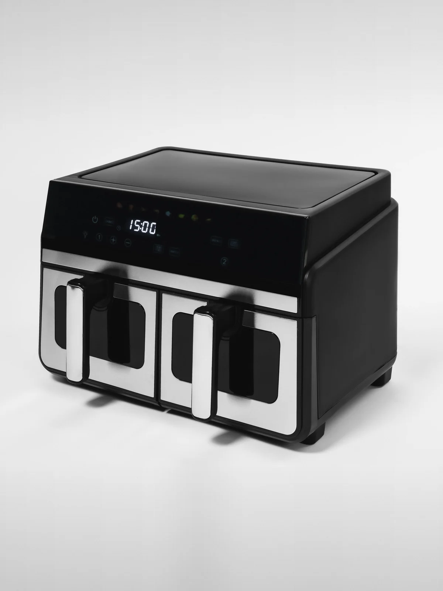
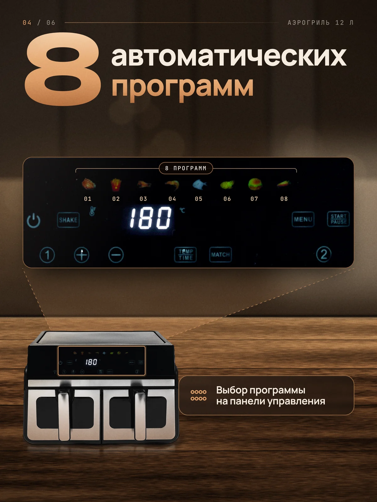
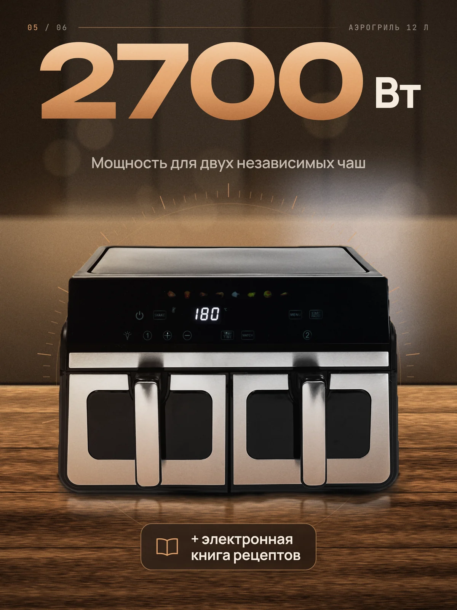
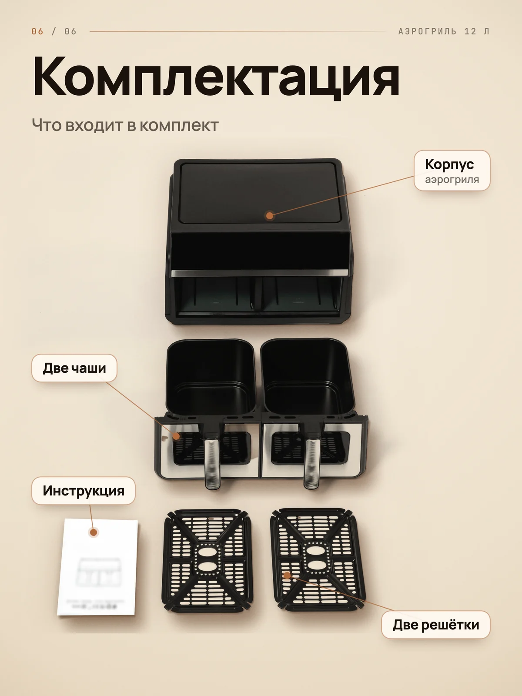
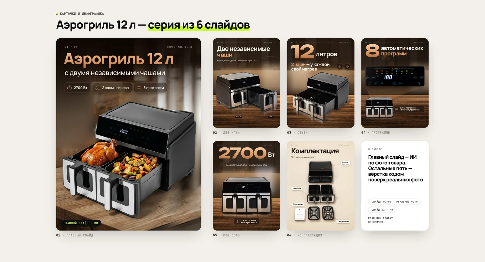
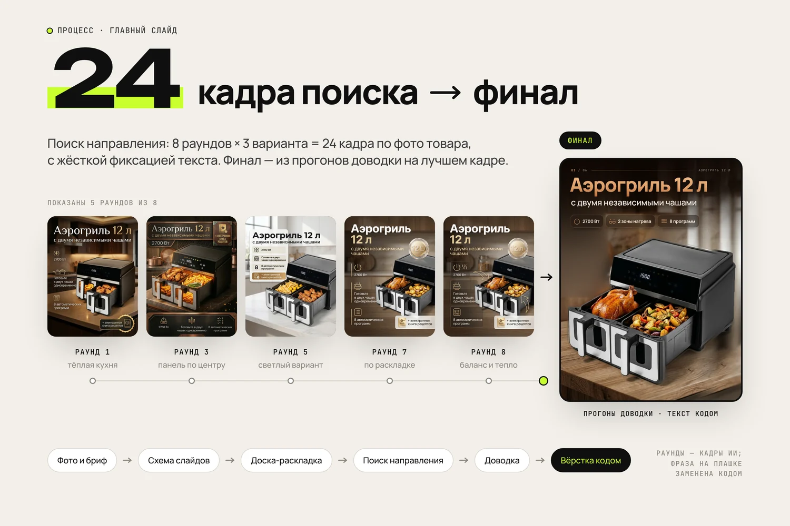

Карточка аэрогриля 12 л: от фото к серии слайдов
Серия из 6 слайдов 3:4: главный — ИИ, остальные 5 — на реальных фото


Были только студийные фото на сером фоне: не видно ни кухни, ни еды, ни того, что чаши две и работают независимо.
Разобрали фото и бриф, составили схему слайдов и доску-раскладку. Главный слайд сделали в Gemini 3.1 Flash Image по фото товара: поиск направления — 8 раундов по 3 варианта (24 кадра) с жёсткой фиксацией текста; финал получен в последующих прогонах доводки на основе лучшего кадра. Заголовок, подзаголовок и плашки на нём — кодом, в той же системе, что на остальных слайдах; часть корпуса, которую ИИ обрезал рамкой кадра, достроена по реальному снимку. Слайды 02–06 свёрстаны кодом из реальных фото: тени, отражения и свет добавлены поверх.
- Серия из 6 слайдов 3:4: главный — ИИ, остальные 5 — на реальных фото
- Единая сетка, шрифты и цвета; слайд «Комплектация» светлый — на нём чёрный пластик читается лучше
- В слайдах только подтверждённые факты о товаре: 12 л, две чаши с отдельным нагревом, 2700 Вт, 8 программ, электронная книга рецептов





